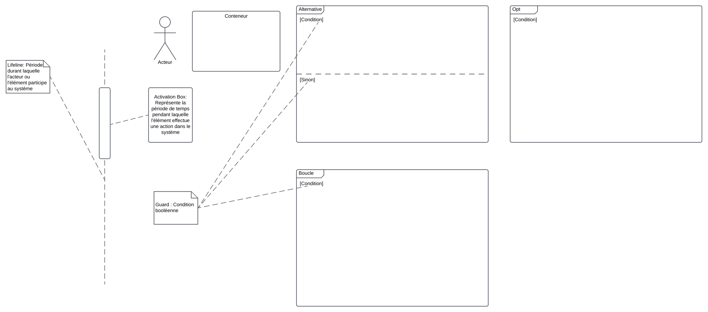
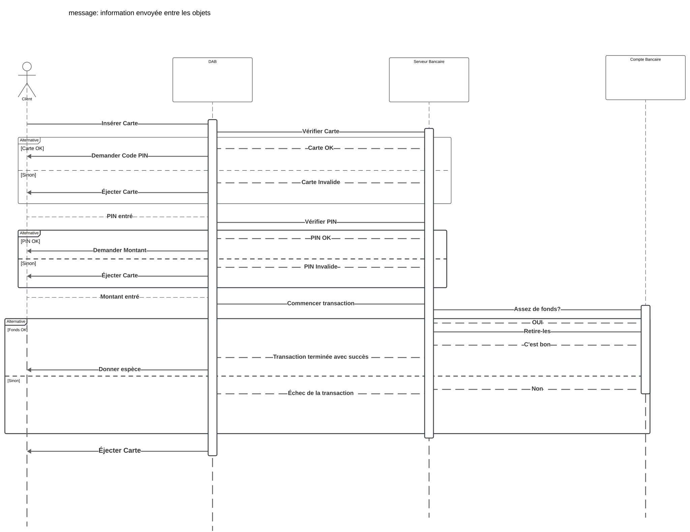

Diagrammes de Séquence
Objectif
Les diagrammes de séquence sont des outils UML utilisés pour modéliser la dynamique des interactions entre les objets d'un système. Ils illustrent l'ordre chronologique des messages échangés entre les différentes entités, offrant une compréhension claire du déroulement des processus et des scénarios d'utilisation.
Cas principaux d’utilisation
-
Modélisation des interactions dynamiques :
- Représenter l'ordre des messages échangés entre les objets.
- Visualiser le flux de contrôle entre les différentes parties du système.
-
Analyse des scénarios d'utilisation :
- Décrire comment les fonctionnalités sont réalisées à travers les interactions.
- Identifier les responsabilités des différents objets dans un processus.
-
Documentation des processus métier :
- Illustrer les workflows et les processus opérationnels.
- Faciliter la communication entre les parties prenantes en fournissant une vue séquentielle des interactions.
-
Support à la conception et au développement :
- Aider à la définition des interfaces et des protocoles de communication.
- Servir de référence pour l'implémentation des comportements dynamiques du système.
Composants principaux

1. Lifeline (ligne de vie)
- Définition :
Représente la présence d'un participant (objet ou acteur) dans l'interaction pendant une période donnée. Elle est illustrée par une ligne verticale en pointillés sous le nom du participant.
2. Messages
-
Définition :
Indiquent la communication entre les participants, représentant l'appel de méthodes ou l'échange d'informations. -
Types de messages :
- Synchronous Call : Appel bloquant où le contrôleur attend une réponse.
- Asynchronous Call : Appel non bloquant où le contrôleur continue sans attendre de réponse.
- Return Message : Réponse à un appel précédent.
- Self-Message : Un objet s'envoie un message à lui-même.
3. Activation (barre d'activation)
- Définition :
Représente la période pendant laquelle un objet est actif pour traiter une opération.
4. Fragments combinés
-
Définition :
Structures permettant de modéliser des comportements complexes tels que les conditions, les boucles et les parallélismes. -
Types courants :
- Alt (Alternative) : Représente des choix mutuellement exclusifs.
- Opt (Option) : Représente un comportement optionnel.
- Loop (Boucle) : Indique une répétition d'interactions.
5. Garde (Guard)
- Définition :
Condition booléenne qui doit être vraie pour que le message ou le fragment combiné soit exécuté. - Notation UML :
Expression entre crochets placée près du message ou du fragment concerné.
Structure et présentation d’un diagramme de séquence
-
Identification des participants :
- Déterminer les objets et acteurs impliqués dans l'interaction.
- Les représenter en haut du diagramme avec leurs lifelines correspondantes.
-
Définition des messages :
- Identifier les messages échangés entre les participants.
- Les dessiner dans l'ordre chronologique, de haut en bas.
-
Utilisation des fragments combinés :
- Appliquer des fragments pour modéliser des comportements conditionnels ou répétitifs.
- S'assurer que la logique du processus est clairement représentée.
-
Ajout des gardes :
- Spécifier les conditions nécessaires pour certaines interactions.
- Les placer de manière à clarifier le flux logique du diagramme.
Résumé
Les diagrammes de séquence sont essentiels pour visualiser et comprendre les interactions dynamiques au sein d'un système. Ils fournissent une représentation séquentielle des messages échangés entre les participants, facilitant ainsi la conception, l'analyse et la communication des comportements opérationnels du système.
Exemple Concret : Fonctionnement d'un Distributeur Automatique de Billets (DAB)
Description du contexte :
Un client utilise un DAB pour retirer de l'argent. Le processus comprend l'insertion de la carte, la saisie du code PIN, la sélection du montant à retirer, et la remise de l'argent. Le DAB interagit avec le serveur bancaire pour valider les informations et les transactions.
Acteurs principaux :
- Client : Utilise le DAB pour effectuer une transaction.
- Distributeur Automatique de Billets (DAB) : Machine exécutant les actions demandées par le client.
- Serveur Bancaire : Système qui valide les informations de la carte et autorise ou refuse les transactions.
Scénario principal :
- Le client insère sa carte dans le DAB.
- Le DAB demande la saisie du code PIN.
- Le client saisit son code PIN.
- Le DAB envoie le code PIN et les informations de la carte au serveur bancaire pour validation.
- Le serveur bancaire valide le code PIN et renvoie l'autorisation.
- Le DAB propose des options (ex. : consulter le solde, retirer de l'argent).
- Le client sélectionne l'option de retrait d'argent et saisit le montant.
- Le DAB transmet la demande de retrait au serveur bancaire.
- Le serveur bancaire vérifie le solde du compte et approuve la transaction.
- Le DAB dispense l'argent demandé.
- Le client récupère sa carte et l'argent.
Objets principaux :
- Client
- DAB
- Serveur Bancaire
Messages échangés (interaction) :
- Client -> DAB : "Insérer la carte".
- DAB -> Client : "Veuillez saisir votre code PIN".
- Client -> DAB : "Saisie du code PIN".
- DAB -> Serveur Bancaire : "Validation de la carte et du code PIN".
- Serveur Bancaire -> DAB : "Code PIN validé".
- DAB -> Client : "Options disponibles (Retirer de l'argent, Consulter le solde)".
- Client -> DAB : "Choisir retirer de l'argent".
- Client -> DAB : "Saisir le montant".
- DAB -> Serveur Bancaire : "Demande de retrait du montant".
- Serveur Bancaire -> DAB : "Transaction approuvée".
- DAB -> Client : "Dispense de l'argent et retour de la carte".
Spécifications UML des messages :
-
Synchronous Messages (Messages synchrones) :
- Utilisés pour les appels nécessitant une réponse immédiate.
- Exemples :
- DAB -> Serveur Bancaire : "Validation de la carte et du code PIN".
- Serveur Bancaire -> DAB : "Transaction approuvée".
-
Return Messages (Messages de retour) :
- Exemples :
- Serveur Bancaire -> DAB : "Code PIN validé".
- Exemples :
-
Self-Messages :
- Utilisés lorsque le DAB exécute une logique interne entre deux actions.
- Exemple :
- DAB effectue une vérification interne des données avant d'envoyer une requête au serveur bancaire.
Exemple de diagramme textuel (pour le représenter graphiquement) :
-
Lifelines (Objets) :
- Client
- DAB
- Serveur Bancaire
-
Messages :
- Client -> DAB : insérerCarte()
- DAB -> Client : afficherDemandePIN()
- Client -> DAB : saisirPIN()
- DAB -> Serveur Bancaire : validerCarteEtPIN()
- Serveur Bancaire -> DAB : retourValidationPIN()
- DAB -> Client : afficherOptions()
- Client -> DAB : choisirOptionRetrait()
- Client -> DAB : saisirMontant()
- DAB -> Serveur Bancaire : demanderRetrait()
- Serveur Bancaire -> DAB : approuverTransaction()
- DAB -> Client : délivrerArgentEtCarte()
Description des relations et détails :
- Acteurs humains et systèmes :
- Le Client agit directement avec le DAB.
- Le DAB est un intermédiaire entre le Client et le Serveur Bancaire.
- Séquences conditionnelles :
- Si le code PIN est incorrect :
- Serveur Bancaire -> DAB : "Code PIN incorrect".
- Le DAB redemande la saisie du code PIN.
- Si le solde est insuffisant :
- Serveur Bancaire -> DAB : "Transaction refusée (solde insuffisant)".
- Le DAB informe le client de l'échec.
- Si le code PIN est incorrect :
Correction

Quiz
Exercices
Système de Réservation de Voyage
Contexte du système
Une agence de voyages en ligne souhaite mettre en place un système pour permettre aux clients de rechercher des voyages, réserver des billets d’avion ou de train, et payer en ligne.
Scénario choisi : Réservation d’un billet d’avion
Description du scénario
-
Recherche d’un vol :
- Le client saisit les informations de recherche (ville de départ, ville d’arrivée, date).
- Le système affiche une liste des vols disponibles correspondant à la recherche.
-
Sélection d’un vol :
- Le client choisit un vol parmi les options affichées.
-
Réservation :
- Le client fournit ses informations personnelles (nom, adresse e-mail, numéro de téléphone) pour confirmer la réservation.
- Le système enregistre la réservation et génère un numéro de réservation unique.
-
Paiement :
- Le client saisit ses informations de paiement (numéro de carte bancaire, date d’expiration, code CVV).
- Le système vérifie les informations auprès du service de paiement.
- Si le paiement est validé, le système confirme la réservation.
-
Confirmation :
- Le système envoie un e-mail de confirmation au client avec les détails du vol et le numéro de réservation.
Instructions pour réaliser le diagramme
- Identifie les acteurs impliqués dans ce scénario (ex. : Client, Système de réservation, Service de paiement).
- Décris les messages échangés entre les acteurs et le système pour chaque étape du scénario (ex. : recherche de vol, saisie des informations, validation du paiement).
- Ajoute les retours associés à chaque interaction (ex. : liste des vols disponibles, confirmation de réservation).
- Utilise les fragments conditionnels (optionnels) si certains messages ou actions dépendent d’un résultat (ex. : paiement validé ou refusé).
- Inclue une chronologie claire montrant l’ordre des interactions entre les acteurs et le système.